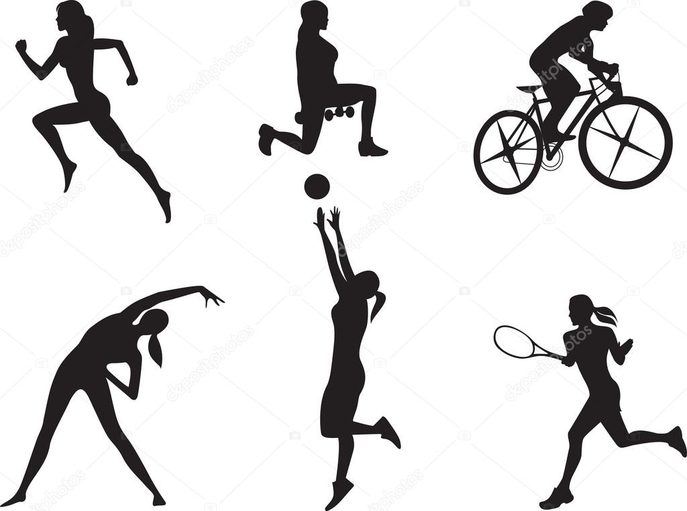

Tarihçe
-

Sporun Tarihçesi
12.11.2019Spor tarihinin ilk izini antik Yunanlara kadar sürebiliriz. Antik Yunan heykellerini incelediğimizde, o tarihlerde sağlıklı ve atletik bir vücut yapısına ne denli hayranlık duyulduğunu görebiliriz. Öyle ki, bu toplum resmi törenlerinin yanı sıra cenazelerde bile çeşitli yarışlara yer veriyordu ve bu tutku, kısa süre içerisinde evrilerek milattan önce 776 yılında Olimpik oyunlara dönüştü
Devamını Oku -

Yeni Umut Spor Tarihçesi
12.11.20192010 yılında Cavidan Kander tarafından kurulmuştur.
2011 Yılında büyük işlere imza atmış ve ilk ödülünü almıştır
2012 Yılında kadromuz kendilerini insanlara adayarak hem özgüven gelişimini hem de sportik gelişimini diğer yerlere göre %50 daha fazla sağlamıştır.
Devamını Oku